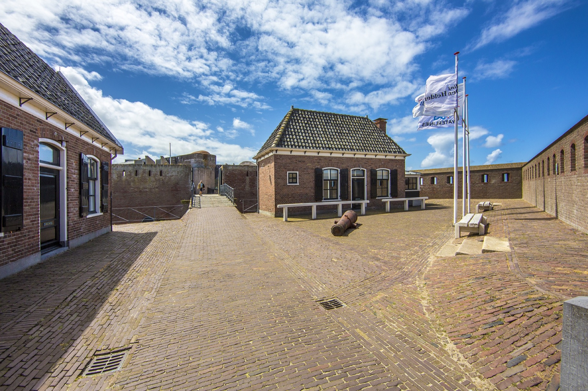
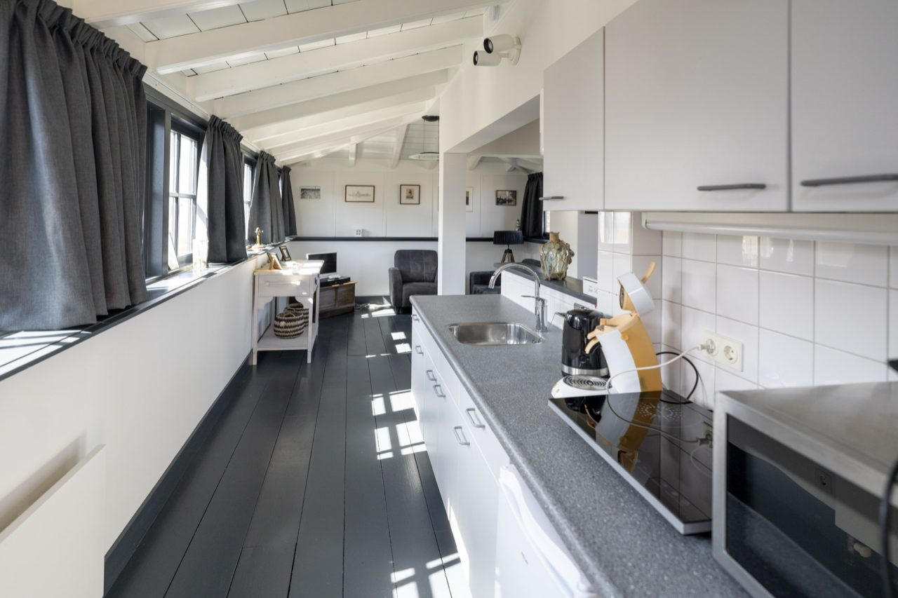
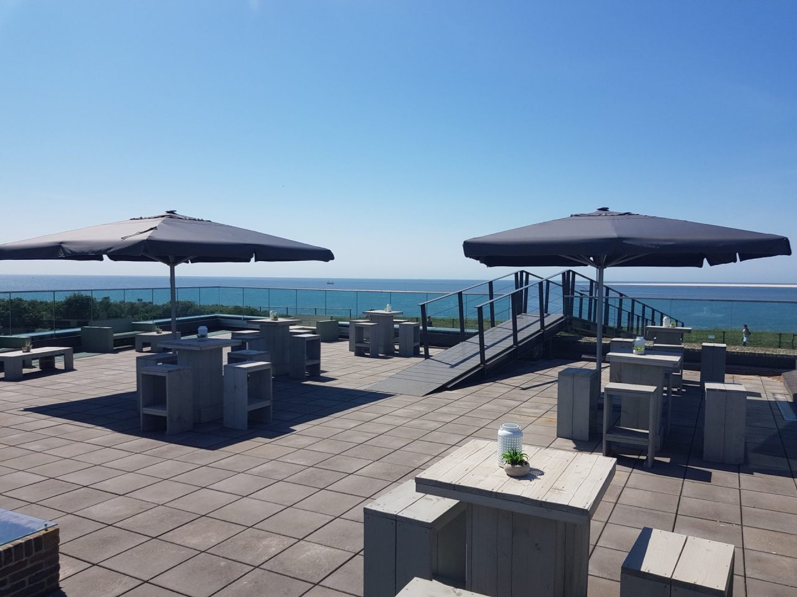
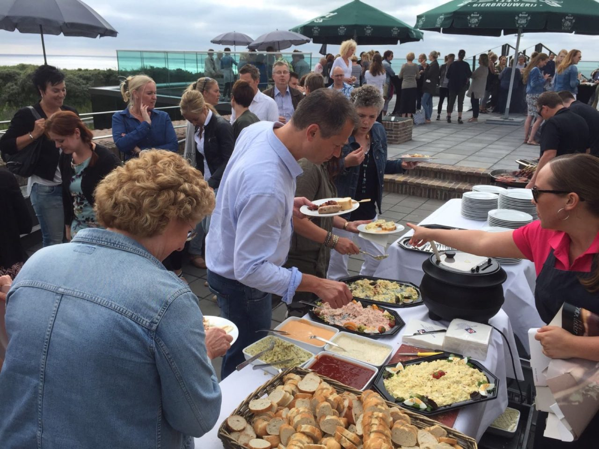

Fort Kijkduin is dé plek voor een onvergetelijk dagje uit, of je nu met familie,
vrienden of alleen op ontdekking gaat.
Combineer historie, natuur en avontuur.
Verken het fort, bezoek het zeeaquarium en geniet van het uitzicht over duinen en zee.
Hoogtepunten van een bezoek aan fort kijkduin
Duik in de geschiedenis: interactieve exposities,
rondleidingen en een gratis audiotour brengen het verleden tot leven.
Uniek zeeaquarium bewonder het zeeleven van de Noordzee en Waddenzee,
inclusief een tunnel waar vissen over je heen zwemmen.
Prachtige ligging: midden in de duinen, ideaal te combineren
met een strandwandeling of natuurtocht.
Spectaculaire vergezichten: geniet van panoramisch uitzicht over zee en duinen
vanaf het fort, café of terras.
Gratis parkeren: geen parkeerstress, je auto kan gewoon dichtbij het fort staan.


Overnachten bij fort kijkduin.
Overnacht als een echte fortwachter
in de historische fortwachterswoning op Fort Kijkduin.
Geniet van rust, uitzicht en natuur
inclusief toegang tot het buitengebied van het fort buiten openingstijden.
Een overnachting is inclusief toegang tot het fort.
Voor meer informatie of het boeken van een overnachting kan je kijken op Booking.com

Verdere mogelijkheden bij fort kijkduin

Feesten en bijeenkomsten: Een familiefeest, bedrijfsfeest, vergadering of bijeenkomst.
Fort Kijkduin biedt unieke ruimtes in een historische setting.
Ons sfeervolle Fortcafé heeft een 270-graden uitzicht op de Grafelijkheidsduinen,
de Noordzee, de Waddenzee, Zandplaat de Razende Bol en Texel.
Bij mooi weer geniet je van ons terras aan zee.
Met flexibele arrangementen en catering op maat
zorgen wij ervoor dat jouw evenement soepel en professioneel verloopt.
Neem contact met ons op om de mogelijkheden te bespreken en maak jouw gelegenheid onvergetelijk!
Plan je bezoek en bestel hier je tickets.
Kinderfeestjes: Zoek je een unieke plek voor een onvergetelijk kinderfeestje?
Kom naar Fort Kijkduin! Ontdek het spannende Noordzeeaquarium,
de ondergrondse tunnel en de indrukwekkende bunkerroute.
Groepen: Op zoek naar een bijzondere locatie voor een groepsuitje met familie, vrienden of collega’s?
Fort Kijkduin biedt de perfecte combinatie van geschiedenis, natuur en cultuur op één locatie!
Naast een bezoek aan het fort kun je je uitje uitbreiden met leuke activiteiten, een heerlijke lunch in het Fortcafé
en een verkwikkende wandeling op het strand of door de Grafelijkheidsduinen.
Ook kun je het Atlantikwall Centrum bezoeken tegen een gereduceerd tarief.
Besloten bijeenkomsten: Voor een meer besloten setting kun je met je groep gebruik maken
van onze evenementenruimtes of de leeszaal in één van de beuken van het fort,
ideaal voor presentaties of vergaderingen op een bijzondere locatie.